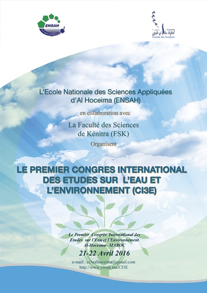
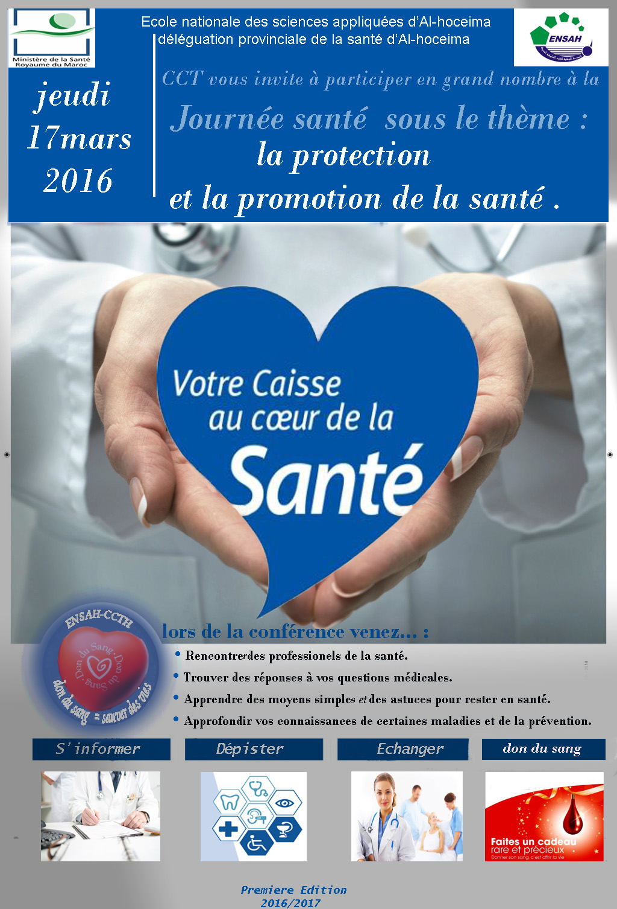
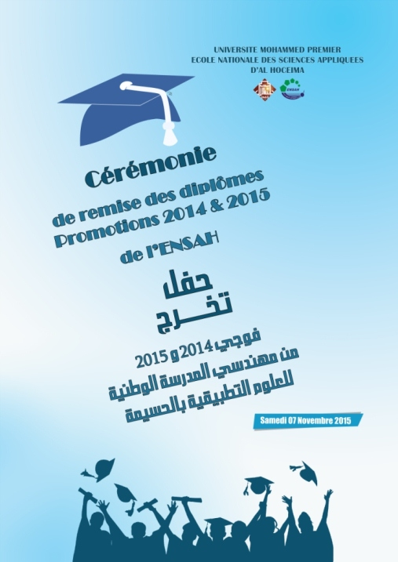

Avis aux étudiants : Rappel concernant la date de début des cours
Vuillez lire l'annonce complète dans le fichier attaché ci-dessous.
Fichier attaché :

 2017-02-14 12:15:08
2017-02-14 12:15:08
Avis aux étudiants de deuxième année Cycle Préparatoire : Examen module Langue et communication 3
Vuillez lire l'annonce complète dans le fichier attaché ci-dessous.
Fichier attaché :
2017-02-13 17:20:40
Avis aux étudiants du CP1 : Mise à jour de l'emplois du temps
Nous informons nos chers étudiants du CP1 que l'emplois du temps a été mis à jour.
Pour consulter les emplois du temps veuillez suivre le lien suivant : Emplois du temps
* LES ETUDIANTS SONT PRIES DE CONSULTER LA PAGE "EMPLOIS DU TEMPS" POUR TOUT CHANGEMENT
2017-02-07 14:23:21
Avis aux étudiants : Mise à jour des emplois du temps
Nous informons nos chers étudiants que les emplois du temps ont été mis à jour.
Les emplois du temps concernés par cette mise à jour sont : GI2, GC1 et GC2
Pour consulter les emplois du temps veuillez suivre le lien suivant : Emplois du temps
* LES ETUDIANTS SONT PRIES DE CONSULTER LA PAGE "EMPLOIS DU TEMPS" POUR TOUT CHANGEMENT
2017-02-06 12:45:51
Avis aux étudiants : Emplois du Temps du Deuxième Semestre
Il est porté à la connaissance des étudiants que les cours de la session du printemps débuteront le lundi 06/02/2017.
Les emplois du temps sont disponibles sur la page Emplois du temps
* LES ETUDIANTS SONT PRIES DE CONSULTER L’EMPLOI DU TEMPS POUR TOUT CHANGEMENT
Fichier attaché :
2017-02-02 21:23:08
Avis aux étudiants de GC1 :Report de l'examen de "Dessin de Bâtiment, Architecture et Initiation technique"
Veuillez lire l'annonce complète dans le fichier PDF suivant :
2017-02-02 11:41:08
Planning des examens - Session Normale Automne 2016/2017
Planning :
Liste des étudiants par lieu d'examen :
2017-01-19 16:32:11
Concours de recrutement d'un Ingénieur et d'un Administrateur : Liste des candidats retenus pour passer l'épreuve orale
Veuillez consulter les annonces complètes dans les liens ci-dessous :
- Ingénieur d'Etat (Télécharger)
- Administrateur Deuxième Grade (Télécharger)
2017-01-12 23:11:32
Report de la date des examens de la session d'automne
2017-01-10 22:56:04
Plannig de TP Matériaux de Construction : GC1 2016 - 2017
2017-01-06 10:39:03
La première Conférence Internationale sur le Génie Civil et les Matériaux
L’Ecole Nationale des Sciences Appliquées d’Al-Hoceima organise en collaboration avec l’Ecole Supérieure de Technologie d’Oujda la première Conférence Internationale sur le Génie Civil et les Matériaux au sein de l'Ecole Nationale des Sciences Appliquées d’Al-Hoceima. Le premier circulaire de la conférence ICCEM'2017 est disponible sous format PDF via le lien ci-dessous :
Circulaire :

2017-01-06 10:34:03
Planning des examens de la session d'automne pour GI3 BI et GL
| GI3 option GL | |
| GI3 Option BI |
2016-12-28 12:09:53
Planning des contrôles continus pour le Cycle Préparatoire
Le calendrier des contrôles continus pour le cycle préparatoire est disponible via le lien ci-dessous :
2016-12-15 12:04:15
Avis de candidature pour le recrutement de Doctorants Contractuels
2016-12-09 23:30:41
Mise à jour de l'emplois du temps pour GC2
L'emplois du temps concernant GC2 a été mis à jour. Pour accéder aux emplois du temps cliquer sur le lien ci-dessous:
2016-11-28 10:33:31
Mise à jour de l'emplois du temps pour GI2
L'emplois du temps (accéder ) concernant GI2 a été mis à jour.
2016-11-22 16:25:43
Mise à jour de l'emplois du temps pour GC1
L'emplois du temps concernant GC1 a été mis à jour. Pour accéder aux emplois du temps cliquer sur le lien ci-dessous:
2016-11-18 20:47:00
Organisation d'un séminaire scientifique : « Gestion des barrages : Contraintes et Perspectives »
L’école Nationale des Sciences appliquées d’Al Hoceima organise un séminaire scientifique portant sur « Gestion des barrages : Contraintes et Perspectives ».

2016-11-18 20:41:16
Liste des candidats retenus pour passer le Concours de recrutement d'un Ingénieur et d'un Administrateur
Veuillez consulter les annonces complètes dans les liens ci-dessous :
- Ingénieur d'Etat (Télécharger)
- Administrateur Deuxième Grade (Télécharger)
2016-11-14 17:57:58
Mise à jour des Emplois du temps du Cycle Préparatoire
Les emplois de temps concernant CP1 et CP2 ont été mis à jour.
* Ces emplois du temps s'appliqueront à partir du lundi 14 novembre 2016 à 8h30 du matin.
NB : LES ETUDIANTS SONT PRIES DE CONSULTER L’EMPLOI DU TEMPS POUR TOUT CHANGEMENT
2016-11-10 15:30:21
Résultat du Concours d'accès en première année du cycle ingénieur
Listes des admis :
Liste des admis en Génie Civil (Télécharger)
Liste des admis en Génie Informatique (Télécharger)
Date d'inscription :
Du jeudi 10/11/2016 jusqu'au mardi 15/11/2016
Dossier d'inscription
- Fiche d'inscription en ligne à l'ENSAH imprimée et légalisée (À obtenir après l’inscription en ligne sur la plateforme e-inscriptions disponible ici)
- Original du Diplôme du Baccalauréat;
- Une Copie certifiée conforme du Diplôme du Baccalauréat;
- Original du Diplôme ou de l’attestation BAC+2 (DUT, DEUG,...);
- Une photo d’identité récente
- Une copies certifiée conforme de la Carte d’Identité Nationale;
- Deux enveloppes timbrées portant l’adresse de domiciliation parentale;
- Dossier médical;
- Frais d’Assurance : 60,00 Dh
2016-11-09 15:55:05
Avis aux étudiants du CP2 : Groupes de TP d'informatique
2016-11-09 09:33:24
Avis aux étudiants du CP2 : Groupes de TP d'informatique
2016-11-09 09:33:07
Avis aux étudiants : Plateforme e-Services
Les étudiants dont les noms apparaissent dans la liste ci-dessous, ont une photo d'identité invalide sur e-services :
Pour plus d'informations sur e-services consultez l'annonce publiée sur le site.
Les comptes e-services associés à des photos non valides seront fermés définitivement pour une durée d’une année le 04/11/2016.
2016-11-01 15:22:26
Concours d'accès en première année du cycle ingénieur : Lieux d'examen
Génie Civil (Télécharger)
Génie Informatique (Télécharger)
2016-10-26 15:11:25
Avis aux candidats au concours d'accès en première année du cycle ingénieur génie civil et génie informatique pour l'année 2016/2017
Veuillez consulter les liens ci-dessous :
+ Liste des candidats retenus pour passer le concours filière génie civil
+ Liste des candidats retenus pour passer le concours filière génie informatique
2016-10-24 17:33:13
Avis de Concours (Réservé aux fonctionnaires)
l'annonce complète est disponible via les liens ci-dessous :
2016-10-20 15:41:56
Avis aux étudiants : Plateforme e-Services
I- C’est quoi e-Services ?
e-Services est une plateforme en ligne qui permet aux étudiants de :
- Consulter les actualités pédagogiques
- Effectuer les réinscriptions
- Effectuer le choix de filière
- Effectuer les demandes d’attestations
- Accéder aux rapports de PFE
- Accéder aux documents de cours en ligne
- Accéder au catalogue de la bibliothèque
- …
II- Comment accéder à l’application ?
Cette application est disponible à l’adresse : http://eservices.ensah.ma . Elle est disponible également depuis le menu du site officiel de l’établissement.
III- Problème de mot de passe
En cas d’oubli de mot de passe, il suffit de cliquer sur le lien : "Vous êtes étudiant et vous avez oublié le mot de passe ?"
Un email contenant un lien de réinitialisation (d’une durée de validité d’une heure) vous sera envoyé.
Pour tout autre problème lié à e-services, vous pouvez contacter le service informatique par email à l’adresse : tarikboudaa@yahoo.fr en joignant à votre email une image de votre carte d’identité et/ou la carte d’étudiant.
IV- Comment avoir un compte e-services (les nouveaux étudiants)
Tout étudiant inscrit à l’ENSAH possède déjà un compte e-services, pour l’avoir il suffit de suivre les étapes décrites dans (III) un email vous sera donc envoyé vous permettant d’avoir un mot de passe.
V- Photo d’identité
La photo d’identité sur e-service doit être une photo professionnelle valide (et non pas une photo destinée aux réseaux sociaux). Les comptes e-services associés à des photos non valides seront fermés définitivement pour une durée d’une année le 01/11/2016.
2016-10-18 12:31:58
Avis de Concours pour le recrutement d'un Ingénieur et d'un Administrateur
Veuillez consulter l'annonce complète en arabe et en français dans le lien ci-dessous :
2016-10-17 14:39:47
Listes de répartition des Groupes de (AP1, AP2 et GC2)
AP1 (Télécharger)
AP2 (Télécharger)
GC2 (Télécharger)
2016-10-17 14:15:38
Avis de concours de recrutement
L'Ecole Nationale des Sciences Appliquées d'Al-Hoceima organise, le 20/11/2016 un concours pour le recrutement d'un (01) professeur assistant. Veuillez lire l'annonce complète en arabe et en français dans les liens ci-dessous :
2016-10-14 12:08:15
Avis de concours d'accès par passerelles au Cycle Ingénieur 2016 / 2017
Génie Civil (rectifié)
2016-10-06 15:40:50
Affectation de la filière pour la Première Année Cycle Ingénieur (Nouvelle Version)
Ci-dessous la nouvelle version de l'affectation de filière pour la première année cycle ingénieur
2016-09-29 11:29:13
Affectation de l'option pour la Troisième Année Génie Civil
2016-09-27 11:49:14
Concours d'accès aux Années Préparatoires Intégrées de l’ENSA Al-Hoceima : Liste des admis à s’inscrire de la dernière liste d'attente
Les candidats dont les noms suivent sont admis à s'inscrire, de la liste d'attente, en Première Année Cycle Préparatoire de l'Ecole Nationale des Sciences Appliquées d'Al-Hoceima.
>> Télécharger la liste des admis à s'inscrire de la liste d'attente finale <<
Dates d'inscriptions : le 27, 28 et le 29 Septembre 2016
Dossier d’inscription :
- Fiche d'inscription en ligne à l'ENSAH imprimée et légalisée (À obtenir après l’inscription en ligne via le lien http://www.ensah.ma/apps/eservices/inscription/bacform.php ).
- Original du Diplôme du Baccalauréat;
- Une photo d’identité récente
- Une Copie certifiées conformes du Diplôme du Baccalauréat;
- Deux Copies certifiées conformes de la Carte d’Identité Nationale;
- Deux enveloppes timbrées portant l’adresse de domiciliation parentale;
- Dossier médical;
- Frais d’Assurance : 60,00 Dh
2016-09-27 10:31:33
Emplois du temps (Provisoires) - Premier Semestre Année Universitaire 2016/2017
L’administration informe les étudiants que les enseignements du semestre d’Automne de l’Année Universitaire 2016-2017 auront lieu conformément aux emplois du temps disponibles via le lien suivant :
NB : LES ETUDIANTS SONT PRIES DE CONSULTER L’EMPLOI DU TEMPS POUR TOUT CHANGEMENT
2016-09-22 14:36:45
Concours d'accès aux Années Préparatoires Intégrées de l’ENSA Al-Hoceima : Nouvelle liste d'attente
Télécharger la liste d'attente
Les inscriptions de cette liste d’attente seront effectuées selon les places disponibles, par ordre de mérite.
A la fin de l’inscription de cette liste d’attente, si le nombre de places disponibles n'est pas atteint, une autre liste sera affichée
Date d'inscription : le 22 et le 23 Septembre 2016
Dossier d’inscription :
- Fiche d'inscription en ligne à l'ENSAH imprimée et légalisée (À obtenir après l’inscription en ligne via le lien http://www.ensah.ma/apps/eservices/inscription/bacform.php ).
- Original du Diplôme du Baccalauréat;
- Une photo d’identité récente
- Une Copie certifiées conformes du Diplôme du Baccalauréat;
- Deux Copies certifiées conformes de la Carte d’Identité Nationale;
- Deux enveloppes timbrées portant l’adresse de domiciliation parentale;
- Dossier médical;
- Frais d’Assurance : 60,00 Dh
2016-09-22 08:47:20
Concours d'accès aux Années Préparatoires Intégrées de l’ENSA Al-Hoceima : Nouvelle liste d'attente
Télécharger la liste d'attente
Les inscriptions de cette liste d’attente seront effectuées selon les places disponibles, par ordre de mérite.
A la fin de l’inscription de cette liste d’attente, si le nombre de places disponibles n'est pas atteint, une autre liste sera affichée
Date d'inscription : le 19, le 20 et le 21 Septembre 2016
Dossier d’inscription :
- Fiche d'inscription en ligne à l'ENSAH imprimée et légalisée (À obtenir après l’inscription en ligne via le lien http://www.ensah.ma/apps/eservices/inscription/bacform.php ).
- Original du Diplôme du Baccalauréat;
- Une photo d’identité récente
- Une Copie certifiées conformes du Diplôme du Baccalauréat;
- Deux Copies certifiées conformes de la Carte d’Identité Nationale;
- Deux enveloppes timbrées portant l’adresse de domiciliation parentale;
- Dossier médical;
- Frais d’Assurance : 60,00 Dh
2016-09-19 09:21:56
Choix Filière pour la Première Année Cycle Ingénieur
Le formulaire de choix de filière pour les étudiants de la première année cycle ingénieur nouvellement issus du cycle préparatoire est disponible sur e-service sous le menu "choix filière"
- Les étudiants doivent exprimer deux choix différents parmi les 3 filières disponibles (Génie Informatique, Génie Civil, Génie Energétique et Energies renouvelables)
- La date limite pour remplir le formulaire est le Lundi 19/09/2016 à 09h00.
2016-09-10 18:32:28
Concours d'accès aux Années Préparatoires Intégrées de l’ENSA Al-Hoceima : Nouvelle liste d'attente
Télécharger la liste d’attente
Les inscriptions de la liste d’attente seront effectuées selon les places disponibles, par ordre de mérite.
A la fin de l’inscription de cette liste d’attente, si le nombre de places disponibles n'est pas atteint, une autre liste sera affichée
Date d'inscription : le 15 et le 16 Septembre 2016
Dossier d’inscription :
- Fiche d'inscription en ligne à l'ENSAH imprimée et légalisée (À obtenir après l’inscription en ligne via le lien http://www.ensah.ma/apps/eservices/inscription/bacform.php ).
- Original du Diplôme du Baccalauréat;
- Une photo d’identité récente
- Une Copie certifiées conformes du Diplôme du Baccalauréat;
- Deux Copies certifiées conformes de la Carte d’Identité Nationale;
- Deux enveloppes timbrées portant l’adresse de domiciliation parentale;
- Dossier médical;
- Frais d’Assurance : 60,00 Dh
2016-09-08 11:56:30
prolongation de la date de dépot des demandes d'inscription à l'internat
La date limite du dépôt des dossiers des demandes de résidence à l’internat est prolongée jusqu' au Vendredi 23 Septembre 2016.
2016-09-07 13:20:14
Réinscriptions pour l’Année Universitaire 2016/2017 (Annonce Actualisé)
Il porté à la connaissance des étudiants de l'ENSAH que les réinscriptions auront lieu du 07 au 23 Septembre 2016 selon la procédure décrite dans le fichier ci-dessous :
2016-09-06 21:08:01
Démarrage des Cours pour l’Année Universitaire 2016/2017
Il est porté à la connaissance des étudiants que le démarrage des cours aura lieu selon le planning suivant :
2016-09-02 14:38:46
Inscription des admis au CNC affectés à ENSAH pour l’Année Universitaire 2016/2017
Cette inscription concerne tous les nouveaux étudiants admis au CNC 2016 affectés à l’ENSA AlHoceima, cliquez ici pour lire l'annonce complète
2016-09-02 14:36:49
Demande d’inscription à l’Internat de l’ENSA Al-Hoceima pour l’Année Universitaire 2016/2017
Cette inscription concerne les anciens étudiants non résidents et les nouveaux inscrits à l’école, cliquez ici pour télécharger l'annonce complète
2016-09-02 14:32:57
Inscription définitive des nouveaux étudiants de la première année du cycle préparatoire pour l’Année Universitaire 2016/2017
2016-09-02 14:21:12
Concours d'accès aux Années Préparatoires Intégrées de l’ENSA Al-Hoceima : Liste des admis sur la liste d'attente 01
Liste d'attente 01 : télécharger
Dates d'inscription : Voir le calendrier des inscriptions sur le site : http://www.ensa-concours.ma/
Dossier d'inscription :
+ Original du Diplôme du Baccalauréat
+ Photocopie de la Carte d’ Identité Nationale
Compléments du dossier :
Les candidats retenus doivent obligatoirement compléter leur dossier d’inscription à l’ENSA Al-Hoceima au début de mois de septembre.
2016-08-03 15:29:31
Résultats du Concours d'accès aux Années Préparatoires Intégrées de l’ENSA Al-Hoceima (Liste principale)
Liste principale (Télécharger)
Dates d'inscription de la liste Principale : Le Vendredi 29 juillet 2016 et le Lundi 01 Août 2016 de 9h à 14h
Dossier d'inscription :
+ Original du Diplôme du Baccalauréat
+ Photocopie de la Carte d’ Identité Nationale
Compléments du dossier :
Les candidats retenus doivent obligatoirement compléter leur dossier d’inscription à l’ENSA Al-Hoceima au début de mois de septembre.
2016-07-28 23:32:30
Bacheliers : Liste des candidats autorisés à passer le Concours d’accès en Première Année du Cycle Préparatoire et locaux d’examen
Liste des candidats + Affectation des loucaux d'examens : Télécharger
Lieu du concours : Ecole Nationale des Sciences Appliquées d’Al-Hoceima
Date du concours : 26 Juillet 2016
Les candidats sont invités à suivre les actualités du concours sur notre site et le site http://www.ensa-concours.ma/
2016-07-25 11:22:31
Bourse région Tanger-Tétouan-Al Hoceima
Les étudiants de l'Ecole Nationale des Sciences Appliquées d'Al-Hoceima peuvent déposer une demande de bourse de la région Tanger-Tétouan-Al Hoceima. Pour plus d'informations consulter les liens ci-dessous :
Télécharger le formulaire de la demande
2016-07-01 14:31:38
International Conference on Materials & Environmental Science
Veuillez consulter la page de l'événement : http://www.jmaterenvironsci.com/icmes2016/index.htm
2016-06-21 16:25:08
Ouverture d'un diplôme universitaire d’études supérieures spécialisées (DUESS) en génie civil
Veuillez télécharger l'annonce complète au format PDF
2016-06-21 16:21:50
Avis aux élèves ingénieurs de GI1 et GI2 planning des rattrapages
Il est porté à la connaissance des élèves ingénieurs de la Filière GI que les examens de Rattrapage de la session du printemps auront lieu conformément au calendrier disponible via le lien ci-dessous :
2016-06-18 12:42:16
PLANNING DES EXAMENS Cycle Ingénieur – Génie Civil Session du Printemps 2015/16 - RATTRAPAGE
Il est porté à la connaissance des élèves ingénieurs de la Filière GC que les examens de Rattrapage de la session du printemps auront lieu conformément au calendrier disponible via le lien ci-dessous :
2016-06-18 12:31:12
PLANNING DES EXAMENS Cycle Préparatoire Session du Printemps 2015/16 - RATTRAPAGE
Il est porté à la connaissance des élèves ingénieurs du Cycle Préparatoire que les examens de Rattrapage de la session du printemps auront lieu conformément au calendrier disponible via le lien suivant :
2016-06-18 12:28:49
Pré-inscription au concours d'accès en première année du Cycle Préparatoire
Pour toute information concernant l’accès en première année du Cycle Préparatoire des ENSA du Maroc , veuillez consulter la circulaire (Télécharger) le lien pour la pré-candidature : http://www.ensa-concours.ma/
2016-06-14 16:19:30
Nouvelle version du Planning des examens de la session normale du printemps - année universitaire 2015-2016
2016-05-30 08:49:19
Report de la date des examens pour la filière GI
Télécharger l'annonce complète
2016-05-23 15:08:47
Report de la date des examens pour le Cycle Préparatoire
Les examens du Cycle Préparatoire auront lieu à partir du 06 Juin 2016. Le planning détaillé sera affiché prochainement sur le site.
2016-05-20 13:25:04
Avis de concours
L’Ecole Nationale des Sciences Appliquées d’Al-Hoceima organise, le 25/05/2016 un concours pour le recrutement d’un (01) professeur assistant dans la spécialité mathématiques, pour plus de détails, veuillez consulter les liens ci-dessous :
2016-04-20 23:33:38
Le premier Congrès International des Etudes sur l'Eau et l'Environnement
La gestion de l’eau et la protection de l’environnement sont des vecteurs de développement durable. Ils sont devenus des thèmes incontournables de tout débat scientifique, politique, économique et social.
A vocation pluridisciplinaire, le premier congrès international des études sur l’eau et l’environnement (CI3E) vise à mettre l’accent sur l’importance, la sensibilisation et la compréhension des enjeux de l'eau et de l’environnement, et à développer des solutions aux différentes problématiques rencontrées dans ce domaine.
Le premier congrès international des études sur l’eau et l’environnement qui se tiendra à l’Ecole Nationale des Sciences Appliquées d’Al-Hoceima se propose de faire le point sur l'avancement des travaux de recherche dans le domaine des sciences de l’eau et de l’environnement. Cette manifestation scientifique sera une occasion de concertation et de débat entre toutes les catégories d’acteurs publics, privés et associatifs impliqués dans les domaines de l’eau et de l’environnement.
Cette rencontre a pour objectifs d’engager des réflexions et des propositions sur les divers aspects de la gestion intégrée de l’eau et de l’environnement en cherchant à promouvoir des solutions aux problèmes qu’elle présente et en réfléchissant aux moyens de les mettre en place.
Site de l’événement : http://congresi3e.com/

2016-04-14 16:00:46
Signature de deux ouvrages du Professeur Abdlekrim NOUGAOUI à l'Ecole Nationale des Sciences Appliquées d'Al-Hoceima
L'Ecole Nationale des Sciences Appliquées d'Al-Hoceima a le plaisir de vous inviter à la Cérémonie de la Signature d'Ouvrages intitulés « Regards sur la Physique Moderne, Édition 2014 » et « Lumière, Matière, Rayonnement & leurs Interaction, Édition 2015 » de Mr. Abdelkrim NOUGAOUI, Professeur de l’enseignement supérieur à la Faculté des Sciences d’Oujda qui aura lieu le Mercredi 30 Mars 2016 à 15h, Amphithéâtre de Conférences, Ecole Nationale des Sciences Appliquées d'Al-Hoceima.

2016-03-25 10:57:47
Avis aux étudiants de l'ENSAH
Le service Informatique porte à la connaissance des étudiants de l’ENSAH que les actualités pédagogiques s’afficheront désormais sur l’espace e-Services.
2016-03-23 13:41:42
Le Club « Culture et Technologie » à l'ENSA Al-Hoceima organise la semaine culturelle ENSAH 2016.
Le Club « Culture et Technologie » à l'ENSA Al-Hoceima, a le plaisir de vous inviter à la semaine culturelle ENSAH 2016.
Programme :
- Mercredi 16 Mars : Compétition coranique et culturelle Local à Amphi B.
- Jeudi 17 Mars : Journée de la santé
- Vendredi 18 Mars : Journée de la femme.
- Samedi 19 Mars : Compétition coranique et culturelle régionale à Amphi B
- Dimanche 20 Mars : Conférence sur « Miracles scientifiques dans le Saint Coran »

2016-03-15 17:12:26
Avis aux étudiants du Génie Informatique 2ème année
Pour la semaine du 14 mars 2016, les séances de TD/TP Interconnexion et Administration des Réseaux seront remplacées par des séances de TD/TP de Base de Données Avancées. Ainsi,
- Mardi 15 mars 2016, Séance de TD/TP en Base de Données Avancées de 16h30 à 18h30.
- Jeudi 17 mars 2016, Séance de TD/TP en Base de Données Avancées de 16h30 à 18h30.
2016-03-14 14:27:42
Planning des travaux pratiques en Electronique Analogique pour les étudiants de CP2
2016-03-14 11:34:39
Résultats de la première épreuve du concours de recrutement des Professeurs assistants
Les résultats sont disponibles via les liens ci-dessous :
- Informatique et/ou Mathématiques Appliquées
- Analyse numérique ou probabilité statistiques (Pour les fonctionnaires Docteurs)
- Hydraulique ou Mécanique des Fluides (Pour les fonctionnaires Docteurs)
- Physique énergétique ou Mécanique (Pour les fonctionnaires Docteurs)
- Réseaux électriques ou Thermodynamique (Pour les fonctionnaires Docteurs)
2016-03-09 15:50:55
Avis de Concours pour le recrutement d'un Professeur Assistant
L’Ecole Nationale des Sciences Appliquées d’Al Hoceima organise, le 20/04/2016 un concours pour le recrutement d’un (01) professeur assistant, pour plus d'informations veuillez consulter les liens ci-dessous :
2016-03-03 11:20:11
Avis aux élèves ingénieurs de GI2 : PFA
2016-03-03 11:00:05
Avis aux élèves ingénieurs du GI1 et GI2
Les avis sont consultables via les liens ci-dessous
Justification d’absentéisme
Inscriptions modulaires
Séance de coaching
2016-03-01 15:08:52
Avis aux élèves ingénieurs du GC1
Il est porté à la connaissance des élèves ingénieurs de la filière GC1 que le cours de "Langage C/C++" commencera dans la semaine du 29/02/2016, veuillez lire l'annonce complète en suivant le lien ci-dessous :
2016-02-29 10:51:15
Avis aux élèves ingénieurs du GC2
Il est porté à la connaissance des élèves ingénieurs de la filière GC2 que le cours de "Sémiologie" commencera cette semaine. pour plus d'informations, veuillez lire l'annonce complète ci-dessous :
2016-02-29 10:51:15
Avis aux élèves de 2ème année du cycle préparatoire
Lire l'annonce (Télécharger)
2016-02-20 17:08:46
Emplois du temps de la session du printemps 2015/2016
Il est porté à la connaissance des étudiants de l’ENSAH que les cours commenceront le lundi 22 février 2016.
Les emplois du temps sont disponibles ici. Les étudiants sont priés de consulter l’emploi du temps pour tout changement.
2016-02-19 17:05:15
Changement de lieu et Horaire d’Examen d’Hydrologie (GC2)
Il est porté à la connaissance des étudiants de GC2 S3 qu'un changement du planning a eu lieu concernant l’examen de Rattrapage du Module « Hydrologie » , veuillez lire l'annonce ci-dessous pour plus de détails :
2016-02-16 14:42:43
Recrutement des étudiants doctorants
Veuillez consulter l'annonce complète via le lien ci-dessous :
2016-02-12 19:44:46
Planning des examens de rattrapage – Session d’Automne 2015/2016
Cycle Préparatoire
Génie Informatique
Génie Civil
2016-02-12 19:28:43
Avis aux étudiants : Examens de Rattrapage - Session d'Automne 2015-2016
Lire l'annonce (Télécharger)
2016-02-04 14:57:05
Avis de concours de recrutement de professeurs assistants au profit des établissements de l'UMP (Réservés aux fonctionnaires)
L'Université Mohammed Premier Oujda organise, au profit des établissements universitaires, des concours pour le recrutement de trente cinq (35) professeurs assistants, veuillez consulter les liens ci-dessous pour lire l'annonce complète.
2016-01-24 11:17:50
Planning d'examen de TP mécanique du point
Le planning d'examen de TP de mécanique du point, est disponible via le lien ci-dessous :
2016-01-22 17:08:17
Délibération du Semestre 5 Filière Génie Informatique (2015-16)
Les résultats de la délibération du Semestre 5 pour la Filière Génie Informatique sont disponibles sur e-services
2016-01-19 17:22:04
Appel à projets de coopération Maroc - Allemagne 2015-2016
Le Ministère de l'Enseignement supérieur, de la Recherche Scientifique et de la Formation des Cadres (MESRSFC), le Centre National pour la Recherche Scientifique et Technique (CNRST) et le Ministère allemand d'enseignement et de recherche viennent de lancer un appel à projets (de type actions intégrées) dans le domaine de la recherche scientifique pour l'année 2015/2016.
Les termes de références de cet appel à projets sont disponible sur le site web du MESRSFC via le lien suivant:
http://www.enssup.gov.ma/ar/Chercheurs/annonces-de-recherche
2016-01-18 10:34:05
Modification du planning des examens de la filière GC, Session d'Automne Normale 2015-16
Une modification a eu lieu sur le planning des examens pour la filière Génie Civil, veuillez consulter le nouveau planning via le line suivant : nouveau planning GC
2016-01-12 18:41:22
Planning des examens
2016-01-12 18:41:05
Concours de recrutement d’un Administrateur de Deuxième Grade : Liste des candidats admis à passer l'épreuve écrite
Il est porté à la connaissance des candidats admis à passer le concours de recrutement d’un administrateur de deuxième grade (spécialité Economie), que l’épreuve écrite aura lieu à l’Ecole Nationale des Sciences Appliquées d’Al Hoceima le Dimanche 17 Janvier 2016.
Télécharger l'annonce complète
2016-01-08 20:00:37
Programme Canadien de bourses de la francophonie PCBF - Campagne 2016
Veuillez cliquer sur le lien ci-dessous pour lire l'annonce complète :
2016-01-06 15:13:59
Avis : Etudiants de GC3 option HYD
2016-01-05 15:41:36
AVIS AUX ELEVES INGENIEURS DE GI 1 SEANCES DE RATTRAPAGE
2016-01-04 16:31:59
Avis aux étudiants de GC3 HYD
2015-12-29 21:13:40
Avis aux étudiants GI1 : Séances de Rattrapage en Base de données
2015-12-29 09:35:28
Avis aux étudiants G1 et GI2 : Séances de rattrapage
GI1 (voir l'annonce complète)
GI2 (voir l'annonce complète)
2015-12-28 23:01:11
Avis aux étudiants du GI3
Planning des examens S5 Génie Informatique
Planning des soutenances de projet commun S5
2015-12-21 22:48:37
Modification du reste de calendrier du semestre d'automne
2015-12-18 21:10:29
Mise à jour du planning de TP « matériaux de construction »
2015-12-14 23:21:16
Concours pour le recrutement des administrateurs
L'Université Mohammed Premier organise, au profit de ces établissements universitaires, le 17/01/2016 des concours pour le recrutement de sept administrateurs de troisième grade, et un administrateur de deuxième grade. Pour plus d'informations, veuillez télécharger les fichiers accessibles via les liens ci-dessous :
Annonce en Français
Annonce en Arabe
2015-12-14 22:49:08
Planning et groupes des travaux pratiques de l’AP-1
Planning : Télécharger
Groupes : Télécharger
2015-12-07 20:53:40
Délivrance des diplômes pour la promotion 2015
L’administration de l’ENSAH porte à la connaissance des étudiants lauréats de la promotion 2015 des Ingénieurs d'Etat que, la délivrance des diplômes les concernant aura lieu à partir du Jeudi 26 Novembre 2015.
La délivrance des diplômes s’effectue auprès du service de scolarité. Pour obtenir votre diplôme, vous devez compléter la procédure administrative décrite ci-dessous. Votre diplôme vous sera alors remis en mains propres sur présentation d’une pièce d’identité. En cas de retrait par une autre personne une procuration est obligatoire.
Procédure :
- Avoir déposé le rapport conformément aux consignes publiées dans l’annonce qui avait été affichée dans ce sens le 13/07/2015 sur le site. Voir le lien ci-dessous :
Soumission de la version numérique finale du rapport de fin d’Etudes
- Un quitus dûment rempli par l’étudiant et signé par le service de la bibliothèque (Télécharger). Ce quitus atteste que vous êtes en règle avec la bibliothèque de l’école.
2015-11-26 11:29:32
Avis aux élèves ingénieurs de GI3 : Date importantes concernant le PFE
Pour lire l'annonce complète prière de cliquer sur le lien suivant : (télécharger)
2015-11-24 23:21:27
Avis de concours pour le recrutement des professeurs assistants
L'Université Mohammed Premier organise, au profit des établissements universitaires, le 25/12/2015 des concours pour le recrutement des professeurs assistants.
Veuillez cliquer sur les liens ci-dessous pour lire l'annonce détaillée
2015-11-17 15:23:50
Avis de Concours de Recrutement de Professeurs Assistants (Session 25/12/2015)
L'Ecole Nationale des Sciences Appliquées d'Al Hoceima organise un Concours pour le recrutement de professeurs assistants. Veuillez cliquer sur les liens ci-dessous pour lire l'annonce détaillée
2015-11-13 16:59:26
Avis aux élèves du GE3 : Date importantes concernant le PFE
2015-11-10 15:48:00
Avis aux élèves du GC3 : Date importantes concernant les rapports de stage
Lire l'annonce 1 (Télécharger)
Lire l'annonce 2 (Télécharger)
2015-11-10 15:44:31
Restaurant de la résidence universitaire de l'ENSAH
Veuillez lire l'annonce complète dans le lien ci-dessous :
2015-11-04 12:24:18
Changement de la date et le lieu de la cérémonie de remise des diplômes
La Cérémonie de remise des diplômes pour les promotions d'ingénieurs d’Etat de 2014 et de 2015 et la promotion 2014 de la formation DUT, aura lieu le Dimanche 08 Novembre à 15h à l'hotel Mira Palace Al-Hoceima.
Programme : Télécharger

2015-11-04 10:32:39
Avis aux élèves Ingénieurs du GI 2
2015-10-28 15:28:02
Cérémonie de remise des diplômes pour les promotions de 2014 et de 2015 de l'ENSAH
La Cérémonie de remise des diplômes pour les deux promotions d'ingénieurs d’Etat de 2014 et de 2015 aura lieu le Samedi 07 Novembre à l'ENSA d'Al Hoceima.
2015-10-28 14:42:37
Planning de TP de matériaux de construction
2015-10-22 15:53:27
Avis aux lauréats de l’année 2014/2015
Il est porté à la connaissance des lauréats de l’année 2014/2015 que les diplômes seront bientôt disponibles, les lauréats qui n’ont pas encore validé leurs rapports sur e-services doivent le faire avant le 06/11/2015.
Une annonce avait été affichée dans ce sens le 13/07/2015 sur le site. Voir le lien ci-dessous :
Soumission de la version numérique finale du rapport de fin d’Etudes
2015-10-21 16:52:10
Nouvelle mise à jour des emplois du temps
Veuillez consulter les emplois du temps mis à jour via le lien suivant :
2015-10-14 19:42:17
Avis aux étudiants non encore réinscrits à l’ENSAH
Les étudiants dont les noms apparus dans la liste suivante : (Télécharger) n’ont pas encore effectué la réinscription.
Le dernier délai pour la réinscription est fixé pour Vendredi 16/10/2015
Tout étudiant n'ayant pas été réinscrit sera considéré comme absent dans tous les enseignements.
2015-10-13 16:46:03
Avis aux étudiants de l'ENSAH : Résidence "Les villages SOS"
Cliquez sur le lien suivant pour lire l'anonnce : Télécharger
2015-10-09 22:54:45
Avis aux étudiants du CP II : Groupes du TP d'informatique 2
Télécharger la liste des groupes
2015-10-06 16:28:22
Concours d'accès en Première Année Cycle Préparatoire : Liste des candidats admis à s’inscrire de la liste d’attente (4ème Partie)
+Liste des candidats admis à s'inscrire de la liste d'attente (4ème partie) :
Veuillez cliquer sur le lien suivant pour télécharger la liste des candidats admis à s'inscrire : Télécharger
+ Date d’inscription :
L'inscription aura lieu le 18 et le 21 Septembre 2015.
+ Dossier d'inscription :
- Fiche d'inscription en ligne à l'ENSAH imprimée et légalisée (à obtenir après l’inscription en ligne à l’adresse : http://www.ensah.ma/apps/eservices/formInscriptionCp1.php).
- Original du Diplôme du Baccalauréat;
- Une photo d’identité récente
- Une Copie certifiées conformes du Diplôme du Baccalauréat;
- Deux Copies certifiées conformes de la Carte d’Identité Nationale;
- Deux enveloppes timbrées portant l’adresse de domiciliation parentale;
- Dossier médical;
- Frais d’Assurance : 60,00 Dh;
- Frais des Activités para universitaire : 90,00 DH
2015-09-18 11:18:25
Listes des admis à l'internat pour l'année 2015/2016
+ Etudiantes (Télécharger)
+ Etudiants (Télécharger)
Dates d'inscription :
le 17, 18 et le 28 septembre 2015.
2015-09-16 18:41:43
Concours d'accès en Première Année Cycle Préparatoire : Liste des candidats admis à s’inscrire de la liste d’attente (3ème Partie)
+Liste des candidats admis à s'inscrire de la liste d'attente (3ème partie) :
Veuillez cliquer sur le lien suivant pour télécharger la liste des candidats admis à s'inscrire : Télécharger
Dans la limite des places disponibles et en fonction du nombre des inscrits de la présente liste d'attente, une autre liste pourra être affichée ultérieurement.
+ Date d’inscription :
L'inscription aura lieu le 16 et le 17 septembre 2015.
+ Dossier d'inscription :
- Fiche d'inscription en ligne à l'ENSAH imprimée et légalisée (à obtenir après l’inscription en ligne à l’adresse : http://www.ensah.ma/apps/eservices/formInscriptionCp1.php).
- Original du Diplôme du Baccalauréat;
- Une photo d’identité récente
- Une Copie certifiées conformes du Diplôme du Baccalauréat;
- Deux Copies certifiées conformes de la Carte d’Identité Nationale;
- Deux enveloppes timbrées portant l’adresse de domiciliation parentale;
- Dossier médical;
- Frais d’Assurance : 60,00 Dh;
- Frais des Activités para universitaire : 90,00 DH
2015-09-15 21:01:23
Concours d'accès en Première Année Cycle Préparatoire : Liste des candidats admis à s’inscrire de la liste d’attente (2ème Partie)
+Liste des candidats admis à s'inscrire de la liste d'attente (2ème partie) :
Veuillez cliquer sur le lien suivant pour télécharger la liste des candidats admis à s'inscrire : Télécharger
+ Date d’inscription :
L'inscription aura lieu le vendredi 11 et le lundi 14 septembre 2015.
+ Dossier d'inscription :
- Fiche d'inscription en ligne à l'ENSAH imprimée et légalisée (à obtenir après l’inscription en ligne à l’adresse : http://www.ensah.ma/apps/eservices/formInscriptionCp1.php).
- Original du Diplôme du Baccalauréat;
- Une photo d’identité récente
- Une Copie certifiées conformes du Diplôme du Baccalauréat;
- Deux Copies certifiées conformes de la Carte d’Identité Nationale;
- Deux enveloppes timbrées portant l’adresse de domiciliation parentale;
- Dossier médical;
- Frais d’Assurance : 60,00 Dh;
- Frais des Activités para universitaire : 90,00 DH
2015-09-10 18:45:40
Avis aux étudiants GI 1
cliquer ici pour lire l'annonce
2015-09-10 13:28:57
Emplois du temps Semestre 1 - 2015/2016
Les emplois du temps sont disponible dans la page accessible via le lien suivant :
2015-09-10 13:12:26
Concours d'accès en Première Année Cycle Préparatoire : Liste des candidats admis à s’inscrire de la liste d’attente
+Liste des candidats admis à s'inscrire de la liste d'attente :
Veuillez cliquer sur le lien suivant pour télécharger la liste des candidats admis à s'inscrire : Télécharger
Dans la limite des places disponibles, une autre liste sera affichée le 10 septembre 2015.
+ Date d’inscription :
L'inscription aura lieu le 09 et le 10 septembre 2015.
+ Dossier d'inscription :
- Fiche d'inscription en ligne à l'ENSAH imprimée et légalisée (à obtenir après l’inscription en ligne à l’adresse : http://www.ensah.ma/apps/eservices/formInscriptionCp1.php).
- Original du Diplôme du Baccalauréat;
- Une photo d’identité récente
- Une Copie certifiées conformes du Diplôme du Baccalauréat;
- Deux Copies certifiées conformes de la Carte d’Identité Nationale;
- Deux enveloppes timbrées portant l’adresse de domiciliation parentale;
- Dossier médical;
- Frais d’Assurance : 60,00 Dh;
- Frais des Activités para universitaire : 90,00 DH
2015-09-08 20:19:29
Avis aux étudiants de la filière Génie Informatique et du Cycle préparatoire
Session d’accueil et d’informations pour Génie Informatique ( Télécharger )
Session d’accueil et d’informations pour le Cycle Préparatoire ( Télécharger )
2015-09-04 11:08:15
Choix de la filière pour la première année du cycle ingénieur
Il est porté à la connaissance des étudiants de la première année cycle ingénieur récemment issus du CP2 que le formulaire d'orientation est disponible sur e-services.
La date limite pour remplir votre choix est Lundi 07/09/2015 à 16h30.
Les étudiants ayant des difficultés à accéder à leur espace e-services doivent contacter le service informatique par email à l’adresse tarikboudaa@yahoo.fr en indiquant le problème rencontré et en joignant avec l’email les images de la carte d’identité national et de la carte d’étudiant.
2015-09-03 17:44:45
Planning des inscriptions et des réinscriptions pour le Cycle ingénieur et le Cycle préparatoire
Les inscriptions et les réinscriptions des étudiants auront lieu selon le planning détaillé disponible via le lien ci-dessous
2015-09-02 12:22:29
Inscriptions et réinscriptions
Les inscriptions et les réinscriptions des étudiants auront lieu dans la période allant du 02 au 14 Septembre 2015, le dossier d’inscription et le planning détaillé seront affichés le 02/09/2014 sur le site de l’établissement .
2015-09-01 18:47:26
Démarrage des cours pour le Cycle Préparatoire et le Cycle Ingénieur
Il est porté à la connaissance des étudiants que le démarrage des cours aura lieu selon le planning suivant :
+ Cycle Ingénieur et 2ème Année Cycle Préparatoire : Le 07/09/2012
+ Première Année Cycle Préparatoire : Le 14/09/2015
2015-09-01 18:22:38
Calendrier des études pour l'année 2015/2016
Le calendrier académique détaillé de l’ENSA Al-Hoceima est consultable via le lien suivant
2015-09-01 18:07:40
Inscription à l’Internat de l’ENSA Al hoceima
Anciens Résidents (Télécharger)
Anciens étudiants non résidents et nouveaux inscrits à l’école (Télécharger)
2015-08-07 13:40:17
Résultats des délibérations de la filière Génie Civil
Les résultats des délibérations pour GC1 et GC2 sont disponibles sur e-services.
2015-08-03 14:36:11
Liste d'attente 1 des candidats admis au concours d’accès Aux Années Préparatoires de l’ENSA Al Hoceima
Liste d'attente 1 : télécharger
Dossier d'inscription :
+ Original du Diplôme du Baccalauréat
+ photocopie de la Carte d’ Identité Nationale
Veuillez consulter les dates importantes concernant les inscriptions sur le site ensa concours
2015-08-03 11:40:55
Bacheliers : Affectation des locaux du Concours d'Accès en première Année Cycle Préparatoire
Veuillez télécharger via le lien ci-dessous l'affectation des locaux du Concours d'Accès en Première Année du Cycle Préparatoire
Affectation des locaux du Concours
2015-07-24 11:16:31
Bacheliers : Liste des Candidats aux concours d'accès aux Années Préparatoires Intégrées de l’ENSA – Centre de concours Al-Hoceima
Les Candidats sélectionnés sont priés de lire attentivement les consignes concernant le concours et la fiche de réponse.
les candidats pré-sélectionnés au concours sont invités à télécharger les convocations à partir de l’adresse web suivante: http://pdf.ensa-concours.ma/
Le concours aura lieu le Samedi 25 juillet 2015 à l’ENSA d’Al-Hoceima
+ Liste des Candidats sélectionnés au concours (Télécharger)
+ Consignes concernant la fiche de réponse (Télécharger)
+ Consignes concernant le Concours (Télécharger)
2015-07-23 13:08:02
Résultats des délibérations de la filière Génie Informatique
Les résultats des délibérations pour GI1, GI2 et GI3 sont disponibles sur e-services.
2015-07-14 15:20:21
Soumission de la version numérique finale du rapport de fin d’Etudes
Les étudiants de la 5ème Année doivent rendre la version numérique du rapport de PFE, cette opération s’effectue en ligne dans e-services.
- Remplir très soigneusement le formulaire d’envoi du rapport ( Menu" PFE et stages" puis "déposer le rapport PFE")
- La version du rapport qui doit être téléchargée est celle dont les remarques de la soutenance sont prises en compte.
- Pour consulter l'état d'avancement de la validation de votre rapport il suffit d'aller sous le menu "PFE et stages" puis "mes rapports"
- Après avoir rempli le formulaire en ligne, votre encadrant validera (ou non) votre rapport. Cette validation est obligatoire pour pouvoir obtenir votre diplôme (lorsqu'il sera disponible) au niveau du service scolarité.
- Votre photo dans l’espace e-services doit être une photo d’identité valide, sinon votre rapport ne sera pas validé par votre encadrant. (Vous pouvez mettre à jour votre photo dans e-services)
- En cas d’erreur dans le remplissage de ce formulaire il suffit de remplir le formulaire à nouveau, mais une fois votre inscription est validée par votre encadrant aucune modification ne sera possible
- Si votre encadrant a refusé de valider votre rapport, vous allez recevoir ses remarques dans e-services, pour lui envoyer une nouvelle version il suffit de remplir le formulaire à nouveau.
- En cas de difficultés dans le remplissage du formulaire, n'hésitez pas à contacter le service informatique sur l'adresse : tarikboudaa@yahoo.fr en indiquant dans l'email votre cin, cne ainsi que le problème rencontré.
- La date limite pour la validation de votre rapport est le 25/07/2015
2015-07-13 12:21:17
Avis aux étudiants : Concours d'entrée en 1ère et 2ème année du Cycle Ingénieur à l'ENSAM à Meknès.
pour plus d'information consultez le fichier diponible via le lien ci-dessous :
2015-07-10 15:04:34
Avis aux étudiants du Cycle Préparatoire : Résultats de la délibération
Les résultats de la délibération pour le Cycle Préparatoire sont disponibles sur e-services
2015-07-09 12:28:29
Avis aux étudiants de GE2 : Résultats de la délibération
Les résultats de la délibération pour la 2ème Année Génie Environnement sont disponibles sur e-services
2015-07-06 16:09:37
Avis aux étudiants de GE3 : Résultats de la délibération
Les résultats de la délibération pour la 3ème Année Génie Environnement sont disponibles sur e-services
2015-07-03 13:00:46
Avis aux étudiants de GC3 : Résultats de la délibération
Les résultats de la délibération pour la 3ème Année Génie Civil sont disponibles sur e-services
2015-07-02 12:58:43
Planning Rattrapage Génie Informatique
Il est porté à la connaissance des étudiants de la filière GI que les rattrapages de la session du printemps auront lieu conformément au calendrier consultable via le lien ci-dessous :
2015-06-26 01:53:55
Avis aux étudiants de GC2 : Choix de l’option
Les étudiants de GC2 doivent remplir la fiche de choix de l’option pour la 3ème année génie civil (télécharger). Les options proposées sont :
- Bâtiment, Pont et Chaussées (BPC),
- Génie Urbain et Environnement (GUE)
- Hydraulique (Hyd).
La fiche remplie doit être rendue au coordonnateur de la filière génie civil avant le 01/07/2015.
2015-06-24 15:24:47
Colloque International « Eau, Recyclage et Valorisation des Déchets », 3ème Edition
Veuillez cliquez sur le lien ci-dessous pour accéder au site de l'événement :
2015-06-09 16:09:59
Quatrième Conférence scientifique de l'Institut de recherches et d'études arabes
Veuillez trouver dans le lien ci-dessous une invitation à participer aux travaux de la quatrième Conférence scientifique de l'Institut de recherches et d'études arabes
2015-06-09 16:04:54
Plannings DS2 Printemps 2014-2015
Il est porté à la connaissance des étudiants que les DS2 de la session du printemps auront lieu conformément aux plannings consultables via les liens ci-dessous :
| Filière | Planning |
| Cycle Préparatoire | Télécharger |
| Génie Informatique | Télécharger |
| Génie Civil | Télécharger |
| Génie Environnement | Télécharger |
NB : La répartition des groupes est affichée sur les tableaux d’affichage
2015-06-05 12:47:29
Avis aux étudiants du CP2 – S4 : Examen de TP d'Informatique II
L'annonce complète est disponible via le lien ci-dessous
2015-05-29 14:33:15
Note circulaire pour l’accès aux ENSA, au titre de l’année universitaire 2015-2016
la note circulaire pour l’accès aux ENSA, au titre de l’année universitaire 2015-2016 est disponible pour téléchargement via le lien ci-dessous :
2015-05-28 14:42:55
Planning d'examen de TP d'électronique pour CP2
Il est porté à la connaissance des étudiants du CP2 que les évaluations des TPs d'éléctronique auront lieu conformément au programme ci-dessous :
2015-05-24 12:14:06
Programme des évaluations des TPs d'optique CP1
Il est porté à la connaissance des étudiants du CP1 que les évaluations des TPs d'optique auront lieu conformément au programme ci-dessous :
2015-05-18 16:41:02
Résultats finals du Concours de Recrutement d’un Professeur Assistant (PA) Spécialité Mathématiques ou Informatique
Veuillez consulter via le lien ci-dessous les résultats finals du Concours de Recrutement d’un Professeur Assistant (PA). Spécialité Mathématiques ou Informatique :
2015-04-15 12:33:54
Résultats finals du Concours de Recrutement d’un Administrateur Deuxième Grade Spécialité Chimie
Veuillez consulter via le lien ci-dessous les résultats finals du Concours de Recrutement d’un Administrateur Deuxième Grade Spécialité Chimie :
2015-04-15 12:32:07
Plannings DS1 Printemps 2014-2015 (Dernière modification le 08/04/2015)
L’administration de l’ENSAH porte à la connaissance des étudiants que le DS1 (session Printemps 2014-2015) aura lieu selon le planning ci-dessous :
| Filière | Planning | Lieu d'examen |
| Cycle Préparatoire | Télécharger | CP 1 Groupe 1 CP 1 Groupe 2 CP 2 Groupe 1 CP 2 Groupe 2 CP 2 Groupe 3 |
| Génie Informatique (Modifié le 07/04/2015) | Télécharger | GI 1 GI 2 |
| Génie Civil (Modifié le 08/04/2015) | Télécharger | GC 1 Groupe 1 GC 1 Groupe 2 GC 1 Groupe 3 GC 2 Groupe 1 GC 2 Groupe 2 GC 2 Groupe 3 |
| Génie Environnement | Télécharger | GE 2 |
2015-04-08 18:48:30
TP d'Electronique CP2 : Changement du planning
Veuillez télécharger le nouveau planning
2015-03-31 15:04:02
Avis concernant la date de début des DS1 Session du Printemps
Veuillez consulter l’annonce complète via le lien ci-dessous :
Télécharger l’annonce complète
2015-03-23 12:24:21
Avis aux étudiants concernant les demandes d’attestations d’assurance
Le service de scolarité informe les étudiants que le dernier délai pour les demandes des Attestations d'Assurance est le Vendredi 20 Mars.
2015-03-11 14:17:21
Emplois du temps (dernière mise à jour le 10/03) :
L’administration de l’ENSAH porte à la connaissance des étudiants que les cours et TD démarreront la semaine du 16 février 2015 à 8h30 selon les emplois du temps ci-dessous.
Les étudiants sont priés de consulter l’emploi du temps pour tout changement.
Deuxième Année Génie Environnement
Génie Civil 1 (Modifié le 06/03)
Génie Civil 2 (Modifié le 06/03)
Cycle Préparatoire 1 (Modifié le 10/03)
Cycle Préparatoire 2 (Modifié le 10/03)
2015-03-10 14:54:59
Résultat de l’épreuve écrite du Concours de Recrutement d’un Administrateur 2ème Grade, spécialité Chimie. Session 25/01/2015
Veuillez consulter l’annonce complète via le lien ci-dessous :
Télécharger l’annonce complète
2015-02-25 12:43:29
Délivrance des diplômes pour la promotion 2014 (Ingénieurs d'état)
L’administration de l’ENSAH porte à la connaissance des étudiants lauréats de la promotion 2014 des Ingénieurs d'Etat que, la délivrance des diplômes les concernant aura lieu à partir du Mercredi 11 Février 2015.
La délivrance des diplômes s’effectue auprès du service de scolarité. Pour obtenir votre diplôme, vous devez compléter la procédure administrative décrite ci-dessous. Votre diplôme vous sera alors remis en mains propres sur présentation d’une pièce d’identité.
- Accusé du dépôt de la version numérique du rapport, signé par l’étudiant. Cet accusé est obtenu après remplissage du formulaire disponible en cliquant ici.
- Un quitus dûment rempli par l’étudiant et signé par le service de la bibliothèque (Télécharger). Ce quitus atteste que vous êtes en règle avec la bibliothèque de l’école.
- Une copie de la version finale de votre rapport de projet de fin d’étude.
2015-02-11 11:37:37
Election du représentant des étudiants au Conseil d'établissement
2015-02-10 12:36:18